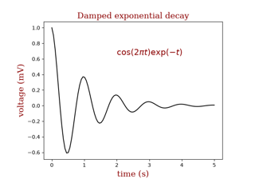
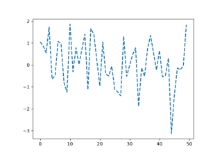

matplotlib.pyplot.plot#
- matplotlib.pyplot.plot(*args, scalex=True, scaley=True, data=None, **kwargs)[source]#
Plot y versus x as lines and/or markers.
Call signatures:
plot([x], y, [fmt], *, data=None, **kwargs) plot([x], y, [fmt], [x2], y2, [fmt2], ..., **kwargs)
The coordinates of the points or line nodes are given by x, y.
The optional parameter fmt is a convenient way for defining basic formatting like color, marker and linestyle. It's a shortcut string notation described in the Notes section below.
>>> plot(x, y) # plot x and y using default line style and color >>> plot(x, y, 'bo') # plot x and y using blue circle markers >>> plot(y) # plot y using x as index array 0..N-1 >>> plot(y, 'r+') # ditto, but with red plusses
You can use
Line2Dproperties as keyword arguments for more control on the appearance. Line properties and fmt can be mixed. The following two calls yield identical results:>>> plot(x, y, 'go--', linewidth=2, markersize=12) >>> plot(x, y, color='green', marker='o', linestyle='dashed', ... linewidth=2, markersize=12)
When conflicting with fmt, keyword arguments take precedence.
Plotting labelled data
There's a convenient way for plotting objects with labelled data (i.e. data that can be accessed by index
obj['y']). Instead of giving the data in x and y, you can provide the object in the data parameter and just give the labels for x and y:>>> plot('xlabel', 'ylabel', data=obj)
All indexable objects are supported. This could e.g. be a
dict, apandas.DataFrameor a structured numpy array.Plotting multiple sets of data
There are various ways to plot multiple sets of data.
The most straight forward way is just to call
plotmultiple times. Example:>>> plot(x1, y1, 'bo') >>> plot(x2, y2, 'go')
If x and/or y are 2D arrays, a separate data set will be drawn for every column. If both x and y are 2D, they must have the same shape. If only one of them is 2D with shape (N, m) the other must have length N and will be used for every data set m.
Example:
>>> x = [1, 2, 3] >>> y = np.array([[1, 2], [3, 4], [5, 6]]) >>> plot(x, y)
is equivalent to:
>>> for col in range(y.shape[1]): ... plot(x, y[:, col])
The third way is to specify multiple sets of [x], y, [fmt] groups:
>>> plot(x1, y1, 'g^', x2, y2, 'g-')
In this case, any additional keyword argument applies to all datasets. Also, this syntax cannot be combined with the data parameter.
By default, each line is assigned a different style specified by a 'style cycle'. The fmt and line property parameters are only necessary if you want explicit deviations from these defaults. Alternatively, you can also change the style cycle using
rcParams["axes.prop_cycle"](default:cycler('color', [(0.12156862745098039, 0.4666666666666667, 0.7058823529411765), (1.0, 0.4980392156862745, 0.054901960784313725), (0.17254901960784313, 0.6274509803921569, 0.17254901960784313), (0.8392156862745098, 0.15294117647058825, 0.1568627450980392), (0.5803921568627451, 0.403921568627451, 0.7411764705882353), (0.5490196078431373, 0.33725490196078434, 0.29411764705882354), (0.8901960784313725, 0.4666666666666667, 0.7607843137254902), (0.4980392156862745, 0.4980392156862745, 0.4980392156862745), (0.7372549019607844, 0.7411764705882353, 0.13333333333333333), (0.09019607843137255, 0.7450980392156863, 0.8117647058823529)])).- Parameters:
- x, yarray-like or float
The horizontal / vertical coordinates of the data points. x values are optional and default to
range(len(y)).Commonly, these parameters are 1D arrays.
They can also be scalars, or two-dimensional (in that case, the columns represent separate data sets).
These arguments cannot be passed as keywords.
- fmtstr, optional
A format string, e.g. 'ro' for red circles. See the Notes section for a full description of the format strings.
Format strings are just an abbreviation for quickly setting basic line properties. All of these and more can also be controlled by keyword arguments.
This argument cannot be passed as keyword.
- dataindexable object, optional
An object with labelled data. If given, provide the label names to plot in x and y.
Note
Technically there's a slight ambiguity in calls where the second label is a valid fmt.
plot('n', 'o', data=obj)could beplt(x, y)orplt(y, fmt). In such cases, the former interpretation is chosen, but a warning is issued. You may suppress the warning by adding an empty format stringplot('n', 'o', '', data=obj).
- Returns:
- list of
Line2D A list of lines representing the plotted data.
- list of
- Other Parameters:
- scalex, scaleybool, default: True
These parameters determine if the view limits are adapted to the data limits. The values are passed on to
autoscale_view.- **kwargs
Line2Dproperties, optional kwargs are used to specify properties like a line label (for auto legends), linewidth, antialiasing, marker face color. Example:
>>> plot([1, 2, 3], [1, 2, 3], 'go-', label='line 1', linewidth=2) >>> plot([1, 2, 3], [1, 4, 9], 'rs', label='line 2')
If you specify multiple lines with one plot call, the kwargs apply to all those lines. In case the label object is iterable, each element is used as labels for each set of data.
Here is a list of available
Line2Dproperties:Property
Description
a filter function, which takes a (m, n, 3) float array and a dpi value, and returns a (m, n, 3) array and two offsets from the bottom left corner of the image
float or None
bool
antialiasedoraabool
BboxBaseor Nonebool
Patch or (Path, Transform) or None
CapStyleor {'butt', 'projecting', 'round'}JoinStyleor {'miter', 'round', 'bevel'}sequence of floats (on/off ink in points) or (None, None)
(2, N) array or two 1D arrays
{'default', 'steps', 'steps-pre', 'steps-mid', 'steps-post'}, default: 'default'
{'full', 'left', 'right', 'bottom', 'top', 'none'}
color or None
str
bool
object
{'-', '--', '-.', ':', '', ...} or (offset, on-off-seq)
float
marker style string,
PathorMarkerStylefloat
markersizeormsfloat
None or int or (int, int) or slice or list[int] or float or (float, float) or list[bool]
bool
list of
AbstractPathEffectfloat or callable[[Artist, Event], tuple[bool, dict]]
float
bool
(scale: float, length: float, randomness: float)
bool or None
CapStyleor {'butt', 'projecting', 'round'}JoinStyleor {'miter', 'round', 'bevel'}unknown
str
bool
1D array
1D array
float
See also
scatterXY scatter plot with markers of varying size and/or color ( sometimes also called bubble chart).
Notes
Note
This is the pyplot wrapper for
axes.Axes.plot.Format Strings
A format string consists of a part for color, marker and line:
fmt = '[marker][line][color]'
Each of them is optional. If not provided, the value from the style cycle is used. Exception: If
lineis given, but nomarker, the data will be a line without markers.Other combinations such as
[color][marker][line]are also supported, but note that their parsing may be ambiguous.Markers
character
description
'.'point marker
','pixel marker
'o'circle marker
'v'triangle_down marker
'^'triangle_up marker
'<'triangle_left marker
'>'triangle_right marker
'1'tri_down marker
'2'tri_up marker
'3'tri_left marker
'4'tri_right marker
'8'octagon marker
's'square marker
'p'pentagon marker
'P'plus (filled) marker
'*'star marker
'h'hexagon1 marker
'H'hexagon2 marker
'+'plus marker
'x'x marker
'X'x (filled) marker
'D'diamond marker
'd'thin_diamond marker
'|'vline marker
'_'hline marker
Line Styles
character
description
'-'solid line style
'--'dashed line style
'-.'dash-dot line style
':'dotted line style
Example format strings:
'b' # blue markers with default shape 'or' # red circles '-g' # green solid line '--' # dashed line with default color '^k:' # black triangle_up markers connected by a dotted line
Colors
The supported color abbreviations are the single letter codes
character
color
'b'blue
'g'green
'r'red
'c'cyan
'm'magenta
'y'yellow
'k'black
'w'white
and the
'CN'colors that index into the default property cycle.If the color is the only part of the format string, you can additionally use any
matplotlib.colorsspec, e.g. full names ('green') or hex strings ('#008000').
Examples using matplotlib.pyplot.plot#



Controlling style of text and labels using a dictionary



Customizing Matplotlib with style sheets and rcParams